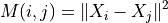

ONNX Concepts¶
ONNX can be compared to a programming language specialized in mathematical functions. It defines all the necessary operations a machine learning model needs to implement its inference function with this langage. A linear regression could be represented the following way:
def onnx_linear_regressor(X):
"ONNX code for a linear regression"
return onnx.Add(onnx.MatMul(X, coefficients), bias)
This example is very similar to an expression a developper could write in Python. It can be also represented as a graph which shows step by step how to transform the features to get a prediction. That’s why a machine learning model implemented with ONNX is often referenced as an ONNX graph.

ONNX aims at providing a common language any machine learning framework can use to describe its models. The first scenario is to make it easier to deploy a machine learning model in production. An ONNX interpretor (or runtime) can be specifically implemented and optimized for this task in the environment where it is deployed. With ONNX, it is possible to build a unique process to deploy a model in production and independant from the learning framework used to build the model.
Input, Output, Node, Initializer, Attributes¶
Building an ONNX graph means implementing a function with the ONNX language or more precisely the ONNX operators. A linear regression would be written this way. The following lines do not follow python syntax. It is just a kind of pseudo code to illustrate the model.
x = onnx.input(0)
a = onnx.input(1)
c = onnx.input(2)
ax = onnx.MatMul(a, x)
axc = onnx.Add(ax, c)
onnx.output(0) = axc
This code implements a function with the signature f(x, a, c) -> axc. And x, a, c are the inputs, axc is the output. ax is an intermediate result. Inputs and outputs are changing at each inference. MatMul and Add are the nodes. They also have inputs and outputs. A node has also a type, one of the operators in ONNX operators. This graph was built with the example in Section A simple example: a linear regression.
The graph could also have an initializer. When an input never changes such as the coefficients of the linear regression, it is most efficient to turn it into a constant stored in the graph.
x = onnx.input(0)
a = initializer
c = initializer
ax = onnx.MatMul(a, x)
axc = onnx.Add(ax, c)
onnx.output(0) = axc
Visually, this graph would look like the following image. The right side describes operator Add where the second input is defined as an initializer. This graph was obtained with this code Initializer, default value.

An attribute is a fixed parameter of an operator. Operator Gemm has four attributes, alpha, beta, transA, transB. Unless the runtime allows it through its API, once it has loaded the ONNX graph, these values cannot be changed and remain frozen for all the predictions.
Serialization with protobuf¶
The deployment of a machine learned model into production usually requires to replicate the entire ecosystem used to train the model, most of the time with a docker. Once a model is converted into ONNX, the production environment only needs a runtime to execute the graph defined with ONNX operators. This runtime can be developped in any language suitable for the production application, C, java, python, javascript, C#, Webassembly, ARM…
But to make that happen, the ONNX graph needs to be saved. ONNX uses protobuf to serialize the graph into one single block (see Parsing and Serialization). It aims at optimizing the model size as much as possible.
Metadata¶
Machine learned models are continuously refreshed. It is important to keep track of the model version, the author of the model, how it was trained. ONNX offers the possibility to store additional data into the model itself.
- doc_string: Human-readable documentation for this model.
Markdown is allowed.
- domain: A reverse-DNS name to indicate the model namespace or domain,
for example, ‘org.onnx’
- metadata_props: Named metadata as dictionary map<string,string>,
(values, keys) should be distinct.
- model_author: A comma-separated list of names,
The personal name of the author(s) of the model, and/or their organizations.
- model_license: The well-known name or URL of the license
under which the model is made available.
model_version: The version of the model itself, encoded in an integer.
producer_name: The name of the tool used to generate the model.
producer_version: The version of the generating tool.
- training_info: An optional extension that contains
information for training (see TrainingInfoProto)
List of available operators and domains¶
The main list is described here: ONNX operators. It merges standard matrix operators (Add, Sub, MatMul, Transpose, Greater, IsNaN, Shape, Reshape…), reductions (ReduceSum, ReduceMin, …) image transformations (Conv, MaxPool, …), deep neural networks layer (RNN, DropOut, …), activations functions (Relu, Softmax, …). It covers most of the operations needed to implement inference functions from standard and deep machine learning. ONNX does not implement every existing machine learning operator, the list of operator would be infinite.
The main list of operators is identified with a domain ai.onnx. A domain can be defined as a set of operators. A few operators in this list are dedicated to text but they hardly cover the needs. The main list is also missing tree based models very popular in standard machine learning. These are part of another domain ai.onnx.ml ONNX ML operators, it includes tree bases models (TreeEnsmble Regressor, …), preprocessing (OneHotEncoder, LabelEncoder, …), SVM models (SVMRegressor, …), imputer (Imputer).
ONNX only defines these two domains. But the library onnx supports any custom domains and operators (see Extensibility).
Supported Types¶
ONNX specifications is optimized for numerical competition with tensors. A tensor is a multidimensional array. It is defined by:
a type: the element type, the same for all elements in the tensor
a shape: an array with all dimensions, this array can be empty, a dimension can be null
a contiguous array: it represents all the values
This definition do not include strides or the possibility to define a view of a tensor based on an existing tensor. An ONNX tensor is a dense full array with no strides.
Element Type¶
ONNX was initially developped to help deploying deep learning model. That’s why the specifications was initially designed for floats (32 bits). The current version supports all common types. Dictionary TENSOR_TYPE_TO_NP_TYPE gives the correspondance between ONNX and numpy.
<<<
import re
from onnx import TensorProto
reg = re.compile('^[0-9A-Z_]+$')
values = {}
for att in sorted(dir(TensorProto)):
if att in {'DESCRIPTOR'}:
continue
if reg.match(att):
values[getattr(TensorProto, att)] = att
for i, att in sorted(values.items()):
si = str(i)
if len(si) == 1:
si = " " + si
print("%s: onnx.TensorProto.%s" % (si, att))
>>>
0: onnx.TensorProto.UNDEFINED
1: onnx.TensorProto.FLOAT
2: onnx.TensorProto.UINT8
3: onnx.TensorProto.INT8
4: onnx.TensorProto.UINT16
5: onnx.TensorProto.INT16
6: onnx.TensorProto.INT32
7: onnx.TensorProto.INT64
8: onnx.TensorProto.STRING
9: onnx.TensorProto.BOOL
10: onnx.TensorProto.FLOAT16
11: onnx.TensorProto.DOUBLE
12: onnx.TensorProto.UINT32
13: onnx.TensorProto.UINT64
14: onnx.TensorProto.COMPLEX64
15: onnx.TensorProto.COMPLEX128
16: onnx.TensorProto.BFLOAT16
ONNX is strongly typed and its definition does not support implicit cast. It is impossible to add two tensors or matrices with different types even if other languages does. That’s why explicit cast must be inserted in a graph.
Sparse Tensor¶
Sparse tensors are useful to represent arrays having many null coefficients. ONNX supports 2D sparse tensor. Class SparseTensorProto defines attributes dims, indices (int64) and values.
Other types¶
In addition to tensors and sparse tensors, ONNX supports sequences of tensors, map of tensors, sequences of map of tensors through types SequenceProto, MapProto. They are rarely used.
What is an opset version?¶
The opset is mapped to the version of the onnx package. It is incremented every time the minor version increases. Every version brings updated or new operators. Pages ChangeLogs keeps tracks of these changes. The current version is the following.
<<<
import onnx
print(onnx.__version__, " opset=", onnx.defs.onnx_opset_version())
>>>
1.11.0rc2 opset= 16
An opset is also attached to every ONNX graphs. It is a global information. It defines the version of all operators inside the graph. Operator Add was updated in version 6, 7, 13 and 14. If the graph opset is 15, it means operator Add follows specifications version 14. If the graph opset is 12, then operator Add follows specifications version 7. An operator in a graph follows its most recent definition below (or equal) the global graph opset.
A graph may include operators from several domains, ai.onnx and ai.onnx.ml for example. In that case, the graph must defines a global opset for every domain. The rule is applied to every operators within the same domain.
Subgraphs, tests and loops¶
ONNX implements tests and loops. They all take another ONNX graphs as an attribute. These structures are usually slow and complex. It is better to avoid them if possible.
If¶
Operator If executes one of the two graphs depending one the condition evaluation.
If(condition) then
exeute this ONNX graph (`then_branch`)
else
exeute this ONNX graph (`else_branch`)
Those two graphs can use any result already computed in the graph and must produce the exact same number of outputs. These outputs will be the output of the operator If.
Scan¶
Operator Scan implements a loop with a fixed number of iterations. It loops over the rows (or any other dimension) of the inputs and concatenate the outputs along the same axis. Let’s see an example which implements pairwise distances: .
This loop is efficient even if it is still slower than a custom implementation of pairwise distances. It assumes inputs and outputs are tensors and automatically concatenate the outputs of every iteration into single tensors. The previous example only have one but it could have several.
Loop¶
Operator Loop implements a for and a while loop. It can do a fixed number of iterators and/or ends when a condition is not met anymore. Outputs are processed in two different ways. First one is similar to loop Scan, outputs are concatenate into tensors (along the first dimension). This also means that these outputs must have compatible shapes. Second mechanism concatenates tensors into a sequence of tensors.
Extensibility¶
ONNX defines a list of operators as the standard: ONNX ML operators. It extends this list with other operators specific to standard machine learning ONNX ML operators. However it is very possible to define your own operators under this domain or a new one. onnxruntime defines custom operators to improve inference performance: Contrib Operators. Every node has a type, a name, named inputs and outputs, and attributes. As long as a node is described under these constraints, a node can be added to any ONNX graph.
One example is the operator CDist. Notebook Pairwise distances with ONNX (pdist) goes into the details of it. Pairwise distances, as shown in section Scan, can be implemented with operator Scan. However, a dedicated operator called CDist is proved significantly faster, significantly enough to make the effort to implement a dedicated runtime for it.
Shape (and Type) Inference¶
Knowing the shapes of results is not necessary to execute an ONNX graph but this information can be used to make it faster. If you have the following graph:
Add(x, y) -> z
Abs(z) -> w
If x and y have the same shape, then z and w also have the same shape. Knowing that, it is possible to reuse the buffer allocated for z, to compute the absolute value w inplace. Shape inference helps the runtime to manage the memory and therefore to be more efficient.
ONNX package can compute in most of the cases the output shape knowing the input shape for every standard operator. It cannot obviously do that for any custom operator outside of the official list.
Tools¶
netron is very useful to help visualize ONNX graphs. That’s the only one without programming. The first screenshot was made with this tool.
onnx2py.py creates a python file from an ONNX graph. This script can create the same graph. It may be modified by a user to change the graph.